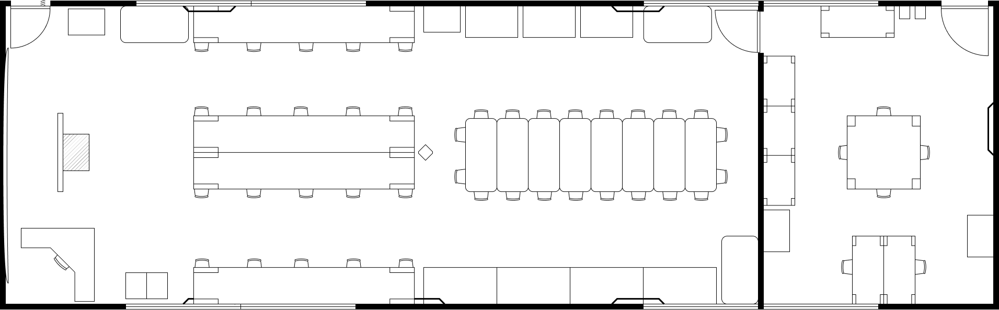
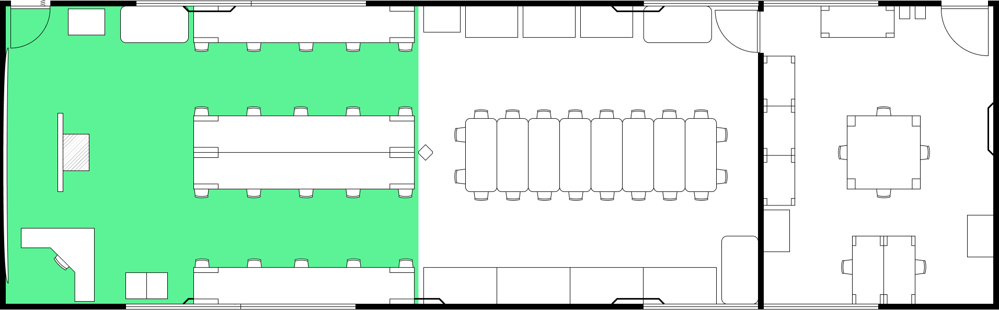
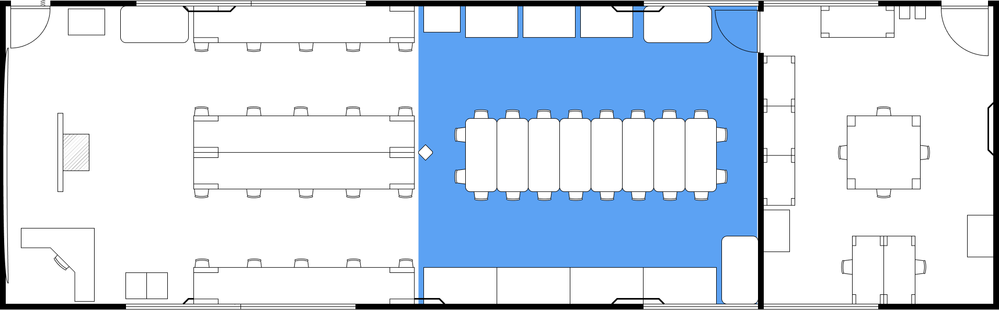
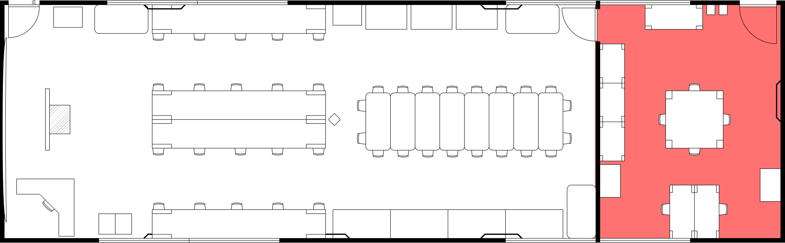

Laboratório de Logística
Campus Viana - Instituto Federal do Espírito Santo (IFES)
O Laboratório de Logística e Desenvolvimento Regional Sustentável do IFES Campus Viana, instalado em 2020 através do processo nº 23147.003943/2020-54, é um complexo concebido para oferecer à comunidade ambientes de vivência e experimentação.

Propósito e Visão Estratégica
O propósito central do laboratório é servir como um instrumento de simulação de práticas que capacitem o discente a desenvolver e gerenciar redes de distribuição e unidades logísticas. O foco está no desenvolvimento da visão macro, preparando o aluno para a programação, monitoramento de fluxo de pedidos e controle de processos complexos.
Conheça os Nossos Living Labs
Passe o mouse sobre cada área do croqui para identificar o laboratório correspondente.




Lab. de Sistemas Logísticos Lab. de Operações e Práticas Lab. de Inteligência LogísticaPasse o mouse sobre uma área do croqui
Cada zona representa um Living Lab com vocação específica. Explore o mapa para conhecê-los.
Os Living Labs (Laboratórios Vivos)
Diferente de um laboratório tradicional, este espaço organiza-se em três living labs (laboratórios vivos), cada um com uma vocação específica:
- Laboratório de Sistemas Logísticos: Espaço destinado a simulações computacionais e uso de sistemas integrados, equipado com bancadas e projetor.
- Laboratório de Operações e Práticas Logísticas: Ambiente voltado para a movimentação física, onde são disponibilizados instrumentos como Flow Racks, mini paletes e estantes para simular o armazenamento e embalagem de materiais.
- Laboratório de Inteligência Logística e Economia Criativa: Lugar de experimentações e mentorias para coletivos empresariais e culturais, focado em inovação regional.